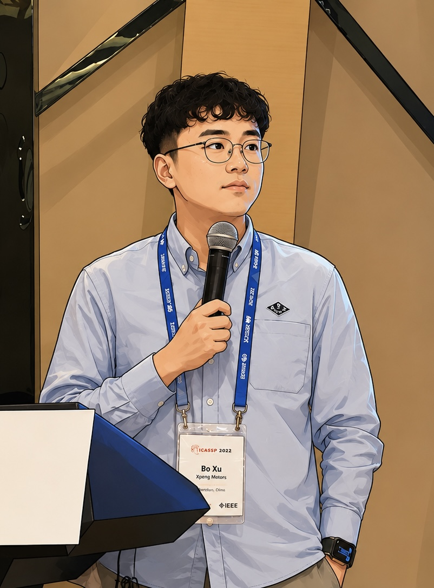

Image / Video Matting
7 papers
I am a machine learning researcher working on multimodal AI, vision-language learning, autonomous driving intelligence, and human-centric computer vision. My research has been published at CVPR, ICCV, AAAI, ACM MM, WACV, and ICASSP, covering audio-visual speech recognition, image/video matting, 3D human reconstruction, temporal grounding, and driving-scene understanding.

Selected accepted / published papers
Publication timeline
Core research areas
CVPR, ICCV, AAAI, ACM Multimedia, WACV, and ICASSP.
Multimodal learning, human-centric vision, matting, speech recognition, temporal grounding, and driving-scene understanding.
A publication-grounded view of the main research areas, without subjective skill scores.
Accepted / published papers only. Earlier duplicate submissions, withdrawals, and CoRR duplicates are excluded.